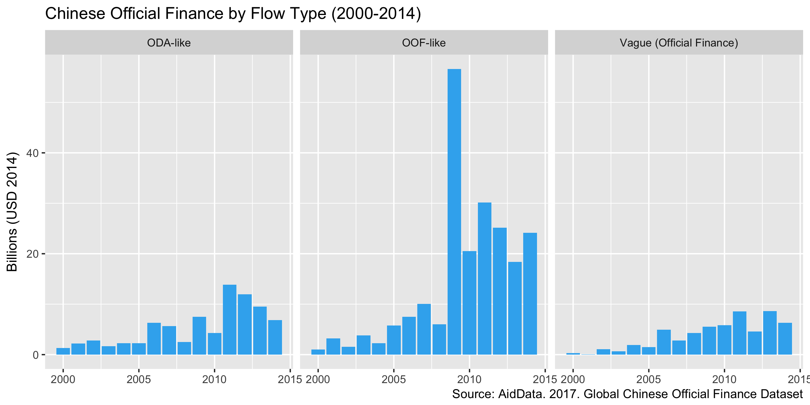
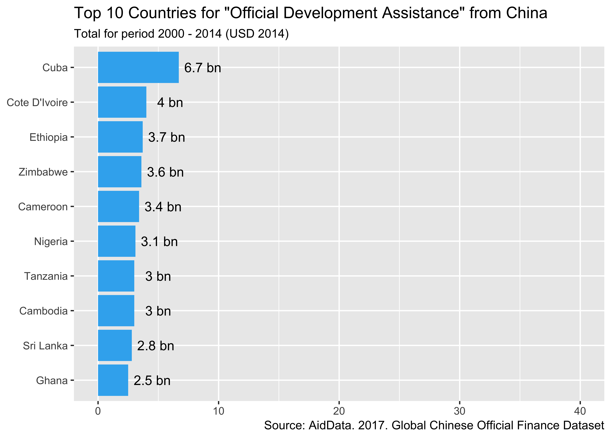
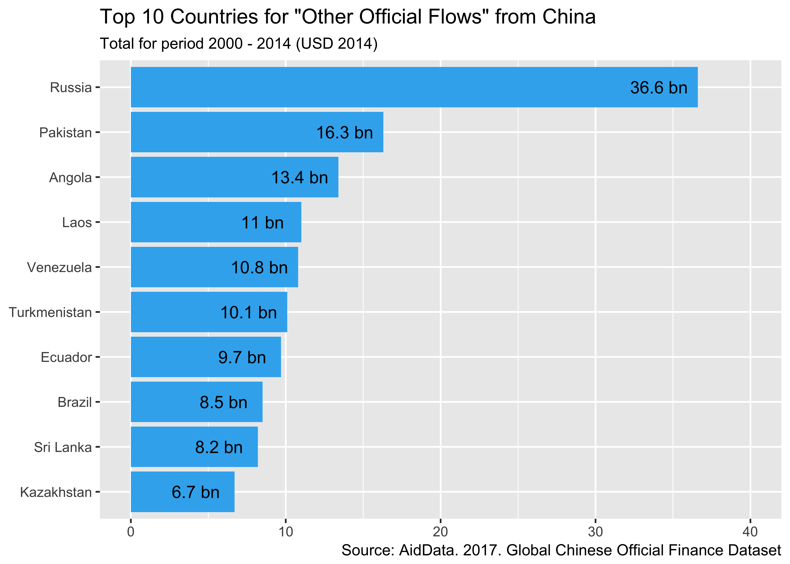
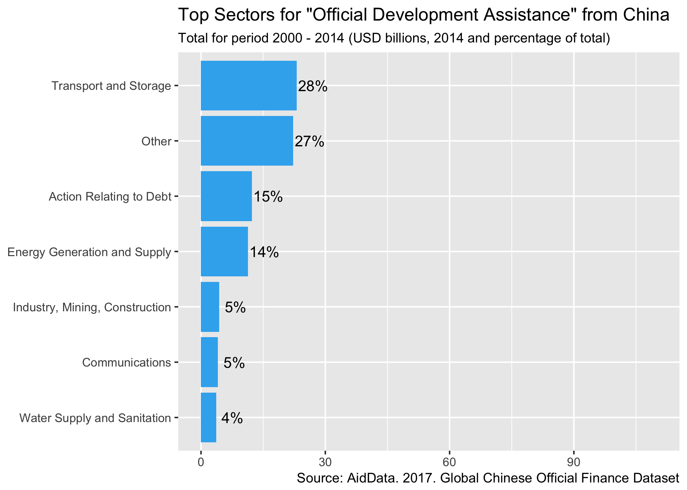
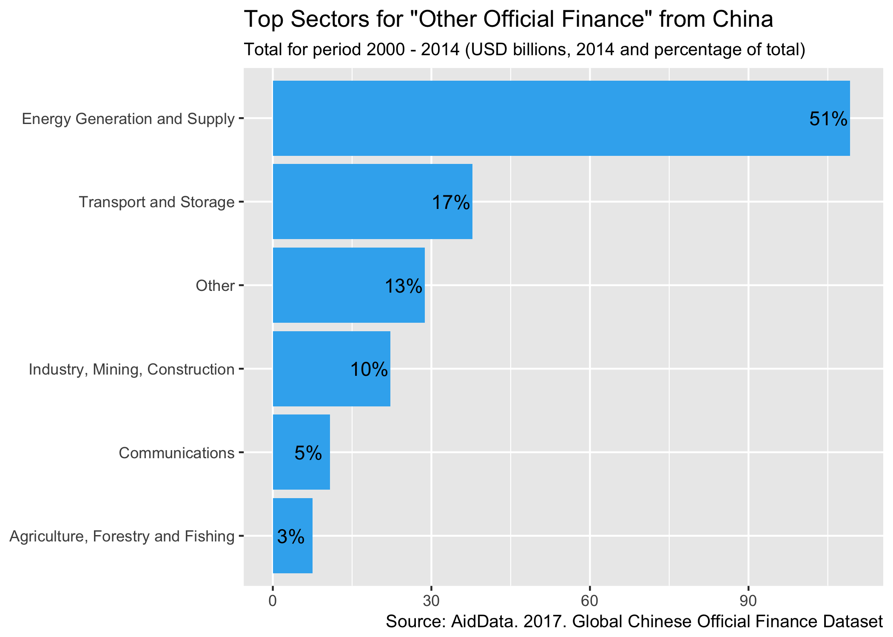

Where does Chinese development finance go?
library(knitr)
library(tidyverse)
library(readxl)
library(ggplot2)
library(plotly)
library(kableExtra)This post looks at the recently updated “Global Chinese Official Finance Dataset” from research group AidData. 
China has provided foreign assistance to countries around the world since the 1950s. Since it’s not part of the DAC group of donors who report their activities in a standard manner, there isn’t an official dataset which breaks down where Chinese foreign assistance goes, and what it’s used for.
A team of researchers at AidData, in the College of William and Mary have just updated their “Chinese Global Official Finance” dataset. This is an unofficial compilation of over 4,000 Chinese-financed projects in 138 countries, from 2000 to 2014, based on a triangulation of public data from government systems, public records and media reports. The team have coded these projects with over 50 variables which help to group and characterize them.
Activity-level data on an increasingly important donor
This dataset is interesting for two reasons. First, China and other emerging donors are making an impact on the development finance landscape. As the Bank has reported in the past (see International Debt Statistics 2016), bilateral creditors are a more important source of finance than they were just five years ago. And the majority of these increases are coming from emerging donors with China playing a prominent role.
Second, this dataset’s activity-level data gives us a look at trends and allocations in Chinese bilateral finance which can inform further analysis and research. Organizations like the World Bank collect data on financial flows directly from government sources for our operational purposes, but we’re unable to make these detailed data publicly available. We compile these data into aggregate financial flow statistics presented from the “debtor perspective”, but they’re not disaggregated by individual counterparties or at an activity-level. So there can be value added from sources such as AidData’s China dataset.
A detailed view, but only part of the picture of all financial flows
However, this dataset has limitations. It only presents estimates of “official bilateral credits”. These are flows between two governments, and are just one part of the total financial flows coming from China. By contrast, the World Bank is able to integrate the granular data it collects from countries into the full set of financial flows to and from its borrowing countries. This situates official bilateral credit among the broader spectrum of providers of long-term financing (such as bondholders, financial intermediaries, and other private sector entities), sources of short-term debt (including movements in bank deposits), and equity investments (foreign direct and portfolio investments). This data integration leads to better quality statistics.
In short, AidData’s China dataset provides more detail on one type of financial flow, but is likely to be less reliable for a number of low-income countries. With these caveats in mind, I’ve done a quick exploration of the dataset to produce some summary statistics and give you an idea of what’s inside. This post is written as an R Notebook which means you see the code behind the charts and analysis, and you can download and run the whole document to do your own analysis.
Looking at foreign assistance by type of flow
First, let’s see what the trends in different types of foreign assistance look like. AidData researchers code the projects they’ve identified into three types of “flow”:
- Official Development Assistance (ODA), which contains a grant element of 25% or more and is primarily intended for development.
- Other Official Flows (OOF), where the grant element is under 25% and the the financing more commercial in nature.
- Vague Official Finance, where there isn’t enough information to assign it to either category.
Here are the total financial values of the projects in AidData’s dataset, grouped by flow type and year:
# Read in the dataset
chinaData <- read_excel("aiddata-china-dataset.xlsx", sheet = "AidData_ChinaGlobal_Data")
# group data by year & flow type, summarize totals expressed in USD deflated to 2014, convert to billions and round
dfp <- chinaData %>%
filter(recommended_for_research == "TRUE") %>%
group_by(year,flow_class) %>%
summarise(total=sum(usd_defl_2014, na.rm="TRUE")) %>%
mutate(total = round(total/1e9,2))
#
# plot amount by year and facet by flow type
#
ggplot(dfp, aes(year,total)) +
geom_bar(stat="identity", fill ="#38b1ef" ) +
facet_wrap(~flow_class) +
ylab(label = "Billions (USD 2014)") +
theme(legend.position="none", axis.title.x = element_blank()) +
labs(title="Chinese Official Finance by Flow Type (2000-2014)",
caption="Source: AidData. 2017. Global Chinese Official Finance Dataset")
It looks like more Chinese finance is classed as OOF ($216bn in the period above) than ODA ($81bn), and that 2009 is a bit of an outlier. With this dataset, we next can figure out which countries are the top recipients of ODA and OOF, and also which sectors are most financed.
But first, let’s take advantage of the activity-level breakdown to see what accounts for the spike in 2009. At a guess, it’s going to be some large individual projects coded that year, so let’s look for OOF activities in 2009 which were > $10bn:
#Filter out 2009 OOF > 10bn
dfa <- chinaData %>%
filter(recommended_for_research == "TRUE" & year==2009 & flow_class=='OOF-like') %>%
mutate(amount = round(usd_defl_2014/1e9,1)) %>%
filter(amount > 10)
#output table
kable(dfa[c('project_id','title','amount')],"html",col.names=c("ID","Title/Description","Amount"), caption="OOF Projects in 2009 > $10bn") %>%
kable_styling(bootstrap_options = c("striped", "hover"))| ID | Title/Description | Amount |
|---|---|---|
| 43012 | China Development Bank to offer loans totaling 25 billion USD in to Russian Roseneft and Transneft (linked to project #43069) | 13.6 |
| 43069 | Roseneft takes out loan of 10 billion USD out of available 15 from China Development Bank (linked to #43012) | 20.4 |
It looks like part of the jump can be explained by two large projects involving Russian energy firms Transneft and Roseneft - they’re also referenced in this 2009 Reuters article about China loaning Russia $25 billion to access to 20 years of oil.
Who are the top recipients of Chinese ODA and OOF?
Switching back to an aggregate view - which countries have received the most ODA and OOF in the 15 years the dataset covers? We can aggregate total project values by flow type and look at the top 10 countries for each type of flow:
#These are the project status codes AidData recommend for use when aggregating.
aggregationStatus <- c('Completion', 'Implementation', 'Pipeline: Commitment')
#Get Top10 ODA data
chODAtop10 <- chinaData %>%
filter(umbrella=='0' & flow_class=='ODA-like') %>%
filter(status %in% aggregationStatus) %>%
group_by(recipient_condensed) %>%
summarise(total=sum(usd_defl_2014, na.rm="TRUE")) %>%
mutate(total = round(total/1e9,1)) %>%
arrange(desc(total)) %>%
top_n(10)
#Get Top10 OOF data
chOOFtop10 <- chinaData %>%
filter(umbrella=='0' & flow_class=='OOF-like') %>%
filter(status %in% aggregationStatus) %>%
group_by(recipient_condensed) %>%
summarise(total=sum(usd_defl_2014, na.rm="TRUE")) %>%
mutate(total = round(total/1e9,1)) %>%
arrange(desc(total)) %>%
top_n(10)
#Build ODA Plot
ODA <- ggplot(chODAtop10, aes(x=reorder(recipient_condensed,total),y=total)) +
geom_bar(stat="identity", fill ="#38b1ef") +
coord_flip() +
scale_y_continuous(limits = c(0, 40)) +
labs(title="Top 10 Countries for \"Official Development Assistance\" from China",
subtitle="Total for period 2000 - 2014 (USD 2014)",
caption="Source: AidData. 2017. Global Chinese Official Finance Dataset") +
geom_text(data=chODAtop10, aes(x=recipient_condensed,y=total,label=paste(total,"bn")), nudge_y = 2) +
theme(axis.title.y = element_blank(),
axis.title.x = element_blank())
#Build OOF Plot
OOF <- ggplot(chOOFtop10, aes(x=reorder(recipient_condensed,total),y=total)) +
geom_bar(stat="identity", fill ="#38b1ef") +
coord_flip() +
scale_y_continuous(limits = c(0, 40)) +
labs(title="Top 10 Countries for \"Other Official Flows\" from China",
subtitle="Total for period 2000 - 2014 (USD 2014)",
caption="Source: AidData. 2017. Global Chinese Official Finance Dataset") +
geom_text(data=chOOFtop10, aes(x=recipient_condensed,y=total,label=paste(total,"bn")), nudge_y = -2.5) +
theme(axis.title.y = element_blank(),
axis.title.x = element_blank())
#Render plots
ODA
OOF
This again shows the relative difference in size of ODA vs OOF but also has me asking some more questions - what are the Chinese ODA flows to Cuba? When we list them out, it looks like the majority of the $6.7bn figure above is debt forgiveness recorded in 2011.
#Filter out Cuba ODA over time
dfc <- chinaData %>%
filter(recommended_for_research == "TRUE" & recipient_condensed=='Cuba' & flow_class=='ODA-like') %>%
mutate(amount = round(usd_defl_2014/1e6,1))
#Output table
kable(dfc[c('project_id','title', 'year','amount')],col.names=c("ID","Title/Description","Year","Amount"),
caption="ODA Projects Cuba 2000-2014") %>%
kable_styling(bootstrap_options = c("striped", "hover"))| ID | Title/Description | Year | Amount |
|---|---|---|---|
| 36186 | China reschedules $7.2 million Cuban debt | 2008 | 9.9 |
| 36187 | China donates cash and materials for Cuban hurricane relief | 2008 | 11.0 |
| 39195 | China forgives US$ 6 billion worth of Cuban Debt | 2011 | 6659.9 |
| 39776 | China donates 400,000 USD for Hurricane Sandy Relief | 2012 | 0.4 |
Which sectors receive the most investment via ODA or OOF?
Finally, let’s take a look by sector. The AidData team have coded projects using DAC Sector Codes and we can look at the relative allocation of resources across these by flow type:
#Get data grouped by sector code
chs <- chinaData %>%
filter(recommended_for_research == "TRUE") %>%
group_by(flow_class,crs_sector_name) %>%
summarise(total=sum(usd_defl_2014, na.rm="TRUE")) %>%
mutate(total = round(total/1e9,2)) %>%
spread(flow_class,total)
#separate and sort dataframes for the ODA and OOF columns because top sectors / grouping are going to be different.
oof <- chs[c(1,3)]
oda <- chs[c(1,2)]
doof <- oof[order(-chs$`OOF-like`),]
doda <- oda[order(-chs$`ODA-like`),]
#Pick out some large categories of ODA/OOF, group the rest, calculate percentages and plot
doda <- rbind (
slice(doda,c(1:3,5,7,8)),
slice(doda,c(4,6,9:n())) %>% summarise(crs_sector_name="Other",`ODA-like`=sum(`ODA-like`))
) %>% mutate(percentage = round(`ODA-like`/sum(`ODA-like`)*100,0))
odasectorplot <- ggplot(doda, aes(x=reorder(crs_sector_name,`ODA-like`),y=`ODA-like`)) +
geom_bar(stat="identity", fill ="#38b1ef") +
coord_flip() +
scale_y_continuous(limits = c(0, 110)) +
labs(title="Top Sectors for \"Official Development Assistance\" from China",
subtitle="Total for period 2000 - 2014 (USD billions, 2014 and percentage of total)",
caption="Source: AidData. 2017. Global Chinese Official Finance Dataset") +
geom_text(aes(x=crs_sector_name,y=`ODA-like`,label=paste0(percentage,"%")), nudge_y = 4) +
theme(axis.title.y = element_blank(),
axis.title.x = element_blank())
doof <- rbind (
slice(doof,c(1:5)),
slice(doof,c(6:n())) %>% summarise(crs_sector_name="Other",`OOF-like`=sum(`OOF-like`,na.rm = TRUE))
) %>% mutate(percentage = round(`OOF-like`/sum(`OOF-like`)*100,0))
oofsectorplot <- ggplot(doof, aes(x=reorder(crs_sector_name,`OOF-like`),y=`OOF-like`)) +
geom_bar(stat="identity", fill ="#38b1ef") +
coord_flip() +
scale_y_continuous(limits = c(0, 110)) +
labs(title="Top Sectors for \"Other Official Finance\" from China",
subtitle="Total for period 2000 - 2014 (USD billions, 2014 and percentage of total)",
caption="Source: AidData. 2017. Global Chinese Official Finance Dataset") +
geom_text(aes(x=crs_sector_name,y=`OOF-like`,label=paste0(percentage,"%")), nudge_y = -4) +
theme(axis.title.y = element_blank(),
axis.title.x = element_blank())
odasectorplot
oofsectorplot
This exploration shows the kind of information in AidData’s “Chinese Global Official Finance” dataset. While offering only a partial, unofficial look at the country’s bilateral financial flows, it’s a detailed look at the activities of an increasingly prominent donor.